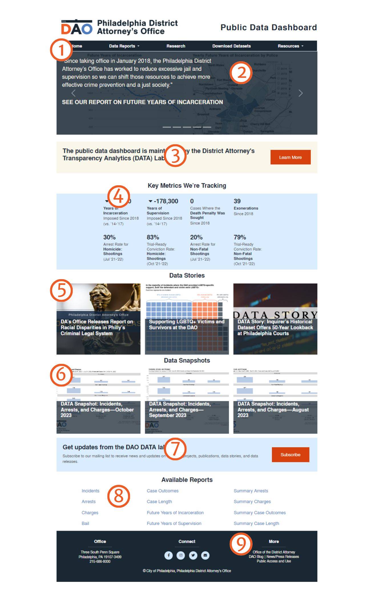
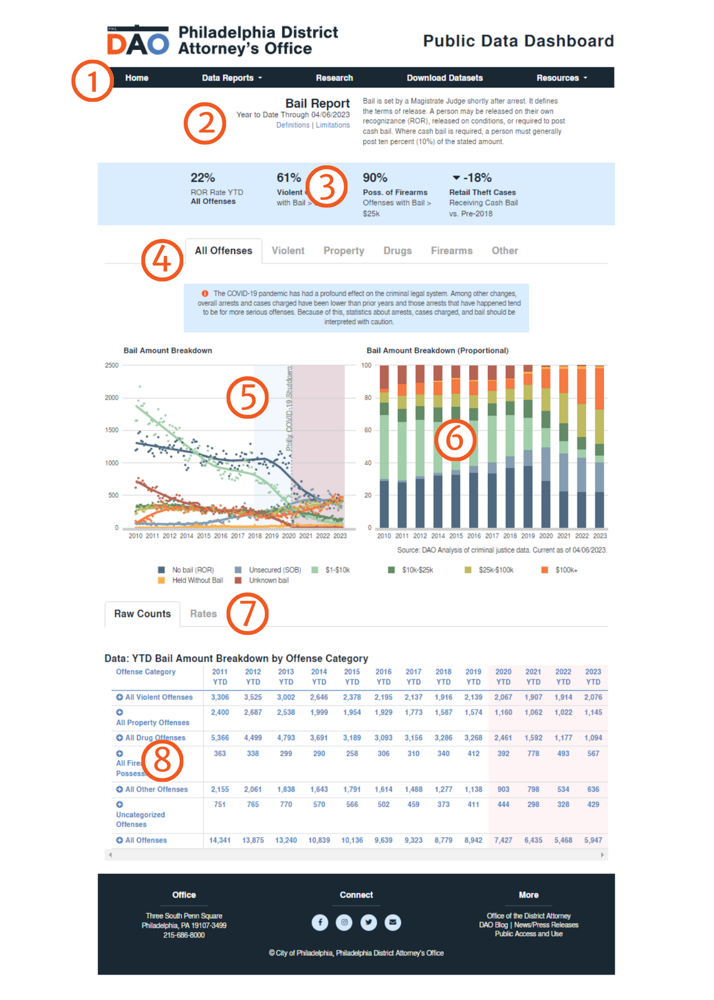
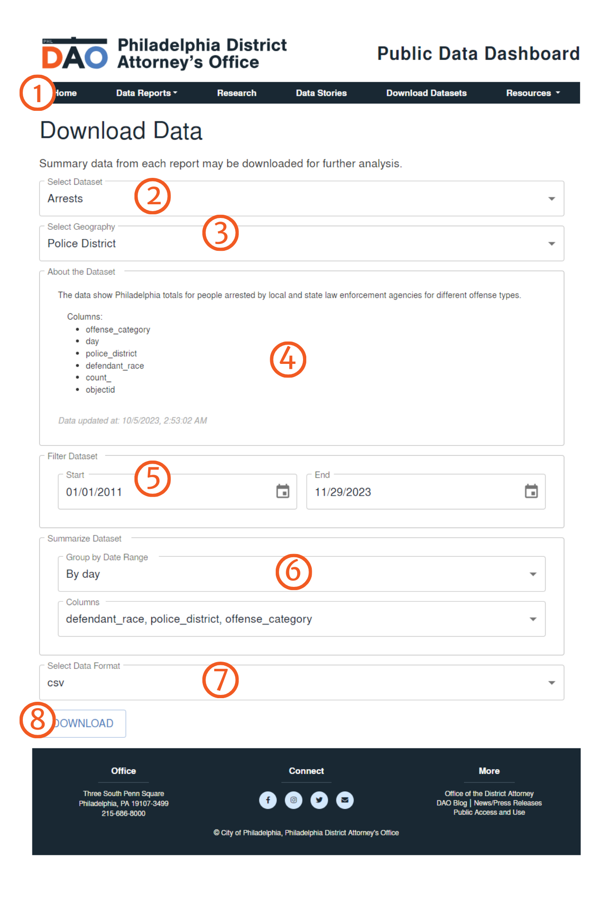

How to Use This Site - PhilaDAO Data Dashboard
The Home Page of the Philadelphia DAO Public Transparency Dashboard helps you to navigate to the various data reports as well as see key information and data stories that the DAO wants to highlight.

Components
-
Menu Bar
The Menu Bar allows for navigation between individual reports and pages of the dashboard. -
Major Stories
This area has links to important notices and stories about the dashboard and the data within. -
Key Metrics
The home page has its own key metrics that the DAO feels most strongly reflects the goals of the office. These metrics do not always come directly from data found in the dashboard and are intended to compliment the key metrics found in each report. These metrics are updated daily, just like the reports. -
Data Stories
Although raw numbers are important, it is critical to understand the context surrounding criminal justice data to fully understand the raw numbers This area shows the most recent Data Stories from The Justice Wire where we consider data and criminal justice issues. -
Available Reports
A set of links to the data reports available on the Dashboard. -
Connect and Contact
Look here to learn more about the Philadelphia District Attorney’s Office or connect with us on social media.
On each report page, you will find various data and metrics on the Criminal Justice System as well as graphs and maps showing the trends and geographic distribution of that data.
Components
-
Menu Bar
Allows for navigation between individual reports and pages of the dashboard. -
Report Title
The Report Title includes the name of the report, the date of the most recent update, and a brief description of the contents of the report. -
Key Metrics
Summary data points related to the report that the District Attorney’s Office is particularly interested in highlighting. -
Offense Type Tabs
Each report is broken down by the most serious offense in any given incident or case: all offenses, violent offenses, property offenses, and drug offenses. By clicking on a tab, the report below only shows data for the chosen offense category. For example, All Offenses shows data for all offenses, while “Drug Offenses” only shows data for drug offenses, broken down into different sub-categories like possession and sales. -
Chart 1: Trend over Time
An interactive chart showing the data in the report over time. The points represent actual quarterly or monthly data, the line is a trend line (using loess regression for the math nerds our there). Seeing data over time allows us to understand how changes in Philadelphia and policies throughout the criminal justice system affects the data we’re tracking. Mouse over the points in the chart to see monthly totals. -
Chart 2: Map or Proportional Bar
Depending on the report, the second chart is either a map or a stacked bar chart. The map shows how the data in the report is spread geographically throughout the city (by policy district) and allows you to compare years to each other. Click the areas on the map to see yearly totals for each geography. The stacked bar chart shows how the data in reports with multiple data categories relate to each other proportionally (e.g. case outsomes and bail). For example, this allows you to compare the proportion of cases that were diverted each year rather than just see that the total number of diverted cases was up or down. This is important because the total may have gone up (or down) because there were more cases in the system overall, not because the DAO was diverting any more cases. Mouse over each portion of the bar to see the rate of each type. -
Counts and Rates Tabs
These tabs allow you to toggle the data tables betweenraw counts and proportions. These are only available in some of the reports. -
Data Table
The data tables show the Year-to-Date (YTD) totals for each data point in a report. For each police category of offense, we’ve provided YTD totals for the years 2014 through present. We have provided the Year-to-Year change between this year and the previous year (YTD), the average of 2014-2017, the average of 2018-present, and a percentage change between the averages of 2014-2017 and 2018-present. In several reports, such as bail and case outcomes, we also provide proportaional information, showing what percentage of all data categories a single category represents.
The reports show Year-To-Date numbers, but we understand that this isn’t enough to fully understand the criminal justice system. To that end, we are making available CSV files with the information from each report summarized on a more frequent basis. Daily summaries are available for the whole city, by police district, and by zip code (technically ZCTA). Weekly summaries are available by census tract. If you are interested in analyzing our data yourself you can download these files and analyze them in excel or any other statistics program.
Components
-
Menu Bar
Allows for navigation between individual reports and pages of the dashboard. -
Title
Shows the date of the most recent updates to the downloadable data. -
Datasets
The names of each available dataset. -
Data Time Period and Geogrpahy
Each dataset is available by a few geographies: citywide, police districts, ZIP Codes (ZCTA), and Census tracts. Most are provided as daily totals, though due to file size limitations we’ve restricted Census tracts to weekly totals. -
Download Links
Links to the comma separated value (CSV) files. We do not provide a direct download for Police incident data. Instead, we include a link to OpenDataPhilly. We do not create or maintain Incident data, as that is made public by the Police. Unlike to other datasets, Incident data consists of data for each reported crime incidents rather than daily summary information. Further, this data is only incidents that the Federal Bureau of Investigation (FBI) classifies as Parts I & II crimes. See the Limitations page for more information on FBI classification. -
Github History
Our datasets are generated automatically from our database connections. Over time, you may notice small changes to data points, even in past years. This is generally due to reclassification of offenses or database corrections. In order to be as transparent as possible, we’re also publishing each dataset to a public GitHub repository. If you’d like to download the data there or see the changes to any dataset over time, feel free to use the public repository.
The City of Philadelphia reserves all rights in the City’s databases and any data contained therein, and the end user’s use of the data does not constitute a transfer of, nor does the end user receive, any title or interest in the database or any other City data. The City of Philadelphia makes no representation about the accuracy of any specific information in this data and is provided “as is” and without Warranty of any kind. The user of this data will assume complete responsibility for any and all occurrences resulting from its use or display and will hold the City of Philadelphia harmless from any and all claims, demands, liabilities, obligations, damages, suits, judgments or settlements, including reasonable costs and attorneys’ fees, that arise from use of this data.